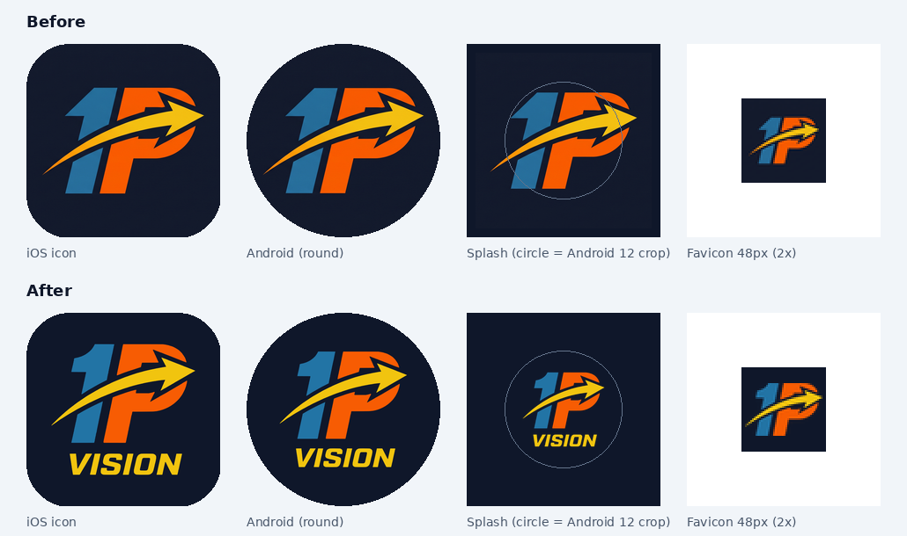
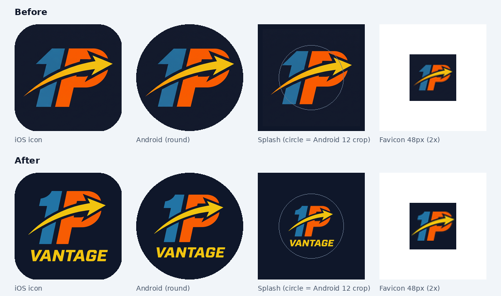
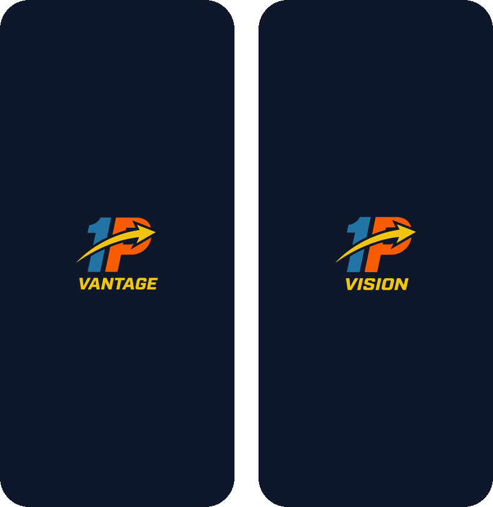
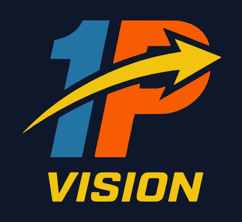
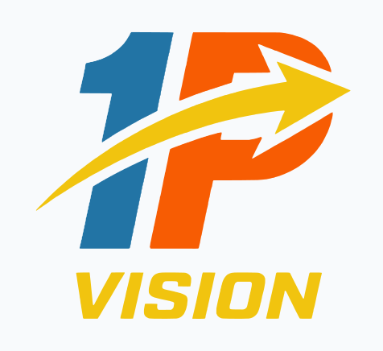
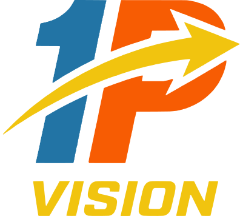
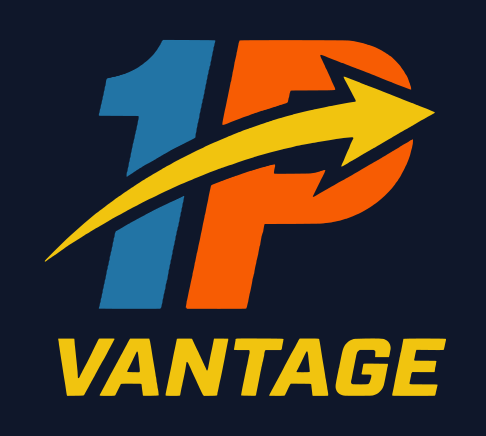
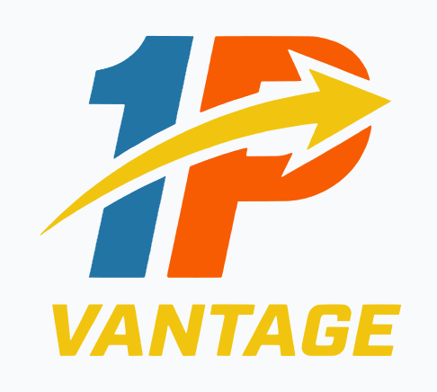
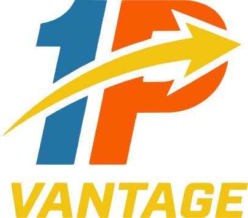

<title>Vision and Vantage Icons</title>
<meta name="claude:viewport-fit-sides" content="cover">
<link rel="stylesheet" href="https://fonts.googleapis.com/css2?family=Montserrat:ital,wght@0,400;0,800;1,800&display=swap">
<style>
/* Single column review sheet: icons per app, then the opening screen, then the vector logos */
:root{--bg:#F8FAFC;--fg:#0F172A;--muted:#475569;--line:#E2E8F0;--accent:#F75C03;--tile:#FFFFFF;--display:"Montserrat",system-ui,sans-serif;--body:"Montserrat",system-ui,sans-serif}
@media (prefers-color-scheme:dark){:root:not([data-theme="light"]){--bg:#0F172A;--fg:#F8FAFC;--muted:#CBD5E1;--line:#1E293B;--tile:#1E293B;color-scheme:dark}}
:root[data-theme="dark"]{--bg:#0F172A;--fg:#F8FAFC;--muted:#CBD5E1;--line:#1E293B;--tile:#1E293B;color-scheme:dark}
body{background:var(--bg);color:var(--fg);font-family:var(--body);line-height:1.5;padding-left:max(16px,env(safe-area-inset-left,0px));padding-right:max(16px,env(safe-area-inset-right,0px));padding-block:24px 48px}
main{max-width:960px;margin:0 auto;display:grid;gap:36px}
h1{font-family:var(--display);font-weight:800;font-style:italic;font-size:1.8rem;letter-spacing:-0.02em;margin:0;text-wrap:balance}
h1 span{color:var(--accent)}
h2{font-weight:800;font-size:1.05rem;margin:0 0 6px;text-wrap:balance}
p{margin:0;color:var(--muted);max-width:65ch}
code{font-size:.85em}
section{display:grid;gap:12px}
.frame{background:var(--tile);border:1px solid var(--line);border-radius:10px;padding:12px;overflow-x:auto}
.frame img{display:block;max-width:100%;height:auto;margin:0 auto}
.grid{display:grid;grid-template-columns:repeat(auto-fit,minmax(220px,1fr));gap:16px}
figure{margin:0;display:grid;gap:8px;min-width:0}
figcaption{font-size:.8rem;letter-spacing:.06em;text-transform:uppercase;color:var(--muted)}
.check{background:#64748B;background-image:conic-gradient(#94A3B8 25%,#64748B 0 50%,#94A3B8 0 75%,#64748B 0);background-size:20px 20px}
</style>
<main>
<header style="display:grid;gap:8px"><h1>Vision and Vantage icons <span>· PR #9 and #10</span></h1>
<p>Before and after for the app icon, Android adaptive icon, splash and favicon in FirstPass Vision and FirstPass Vantage, plus the vector logos they are rendered from.</p></header>

<section><h2>FirstPass Vision</h2>
<p>The Android tile shows what the launcher displays (the middle 72 of 108 units). The circle on the splash is the area Android 12 and later shows.</p>
<div class="frame"></div></section>

<section><h2>FirstPass Vantage</h2>
<div class="frame"></div></section>

<section><h2>Opening screen</h2>
<p>The splash logo is drawn at 288 points wide on Deep Navy. PR #9 placed it edge to edge, so Android 12 and later would have cut off the arrow and the product name. PR #10 shrinks it inside the circle.</p>
<div class="frame" style="background:#0F172A"></div></section>

<section><h2>Vector logos</h2>
<p>Traced from Matt's artwork with the colours set to the brand palette. The app icons are rendered from these files. Transparent versions are shown on a checkerboard.</p>
<div class="grid">
<figure><div class="frame"></div><figcaption>Vision on navy</figcaption></figure>
<figure><div class="frame"></div><figcaption>Vision on light grey</figcaption></figure>
<figure><div class="frame check"></div><figcaption>Vision, transparent</figcaption></figure>
<figure><div class="frame"></div><figcaption>Vantage on navy</figcaption></figure>
<figure><div class="frame"></div><figcaption>Vantage on light grey</figcaption></figure>
<figure><div class="frame check"></div><figcaption>Vantage, transparent</figcaption></figure>
<figure><div class="frame check"></div><figcaption>1P mark, transparent</figcaption></figure>
</div></section>
</main>
